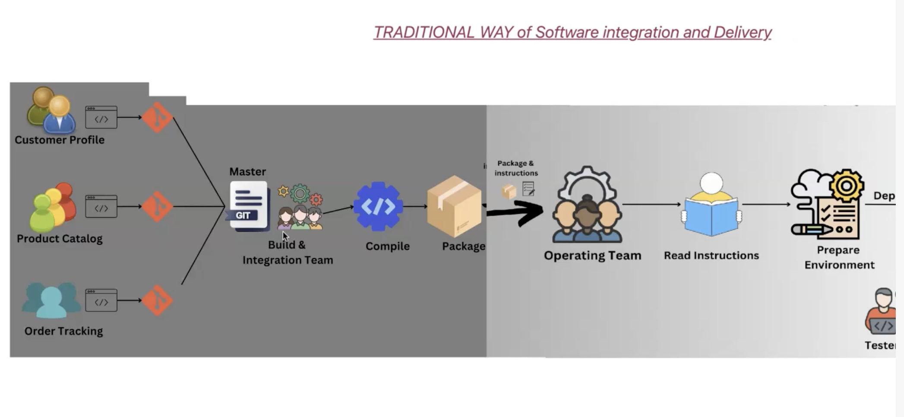
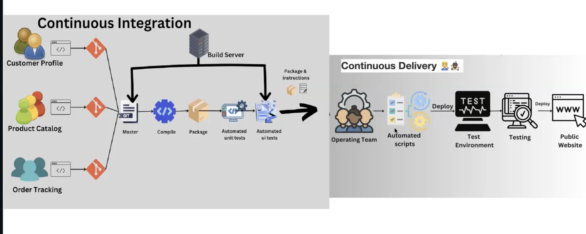

CICD pipeline
old CICD pipeline
compile - means convert high level language to machine understandable format (low level language)
1.let say we have 100 files we cant copy all 100 files on to server..in an app (code, db, apis)
2. they compiled into package (image) // build and integration team create package along with deployment instructions..
// they will decide what needs to include and ignore etc...
3. the operation team -> take the package and deploy on server using given instructions
its long process used to take some time
cons - developer will get feed back after long time

new CICD pipeline
1. continuos integration - even small change will go through complete life cycle and new package generated
here copilation into package automated
2. operation team trigger scrpts for deployment / else they create automated scripts to do this process called as continues delivery
